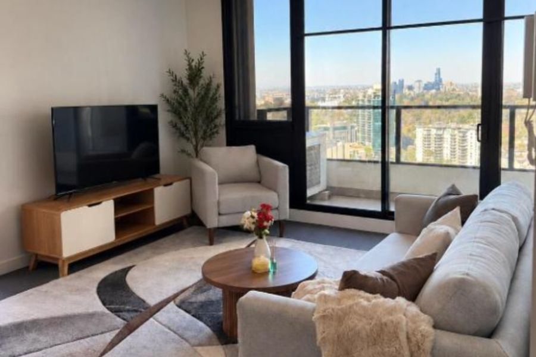
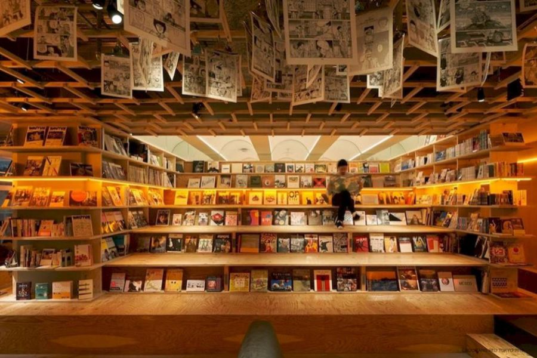
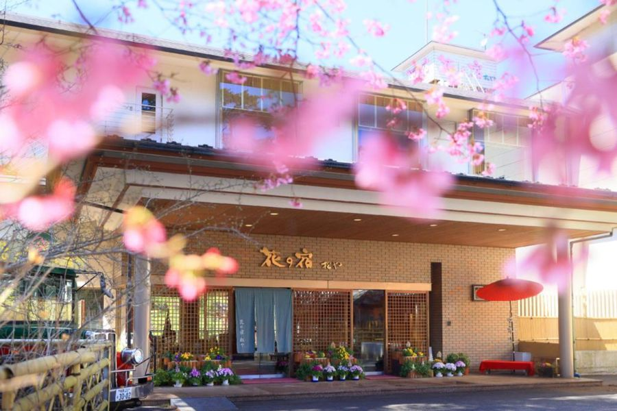
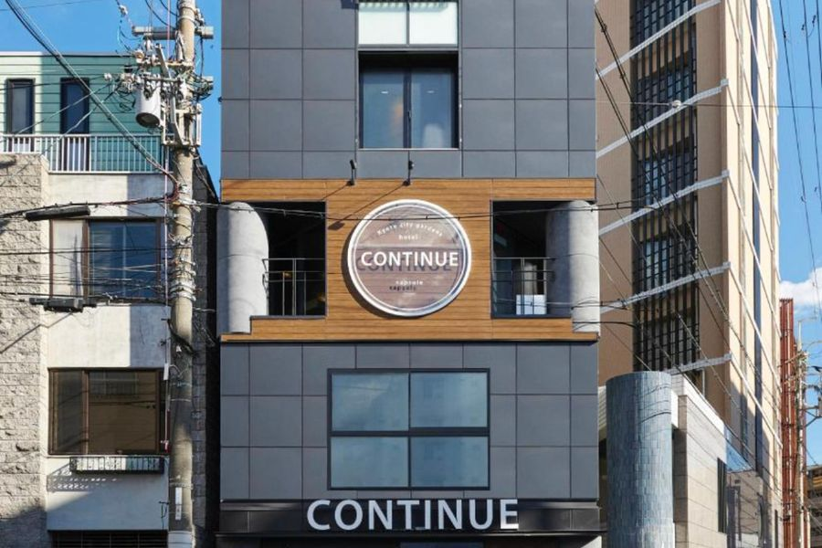
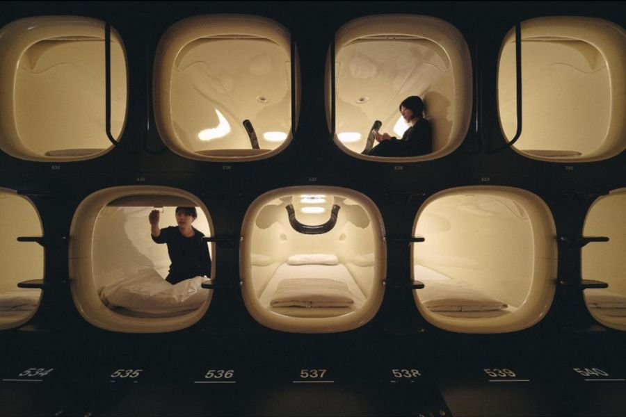
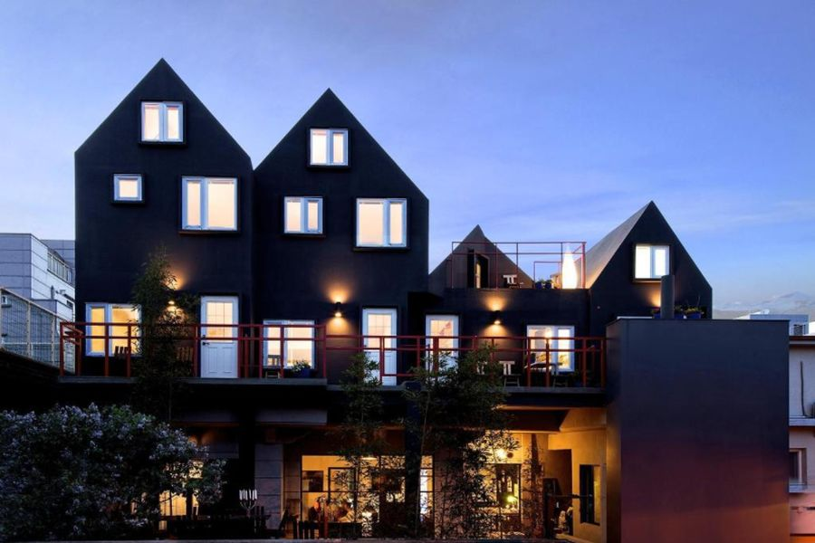
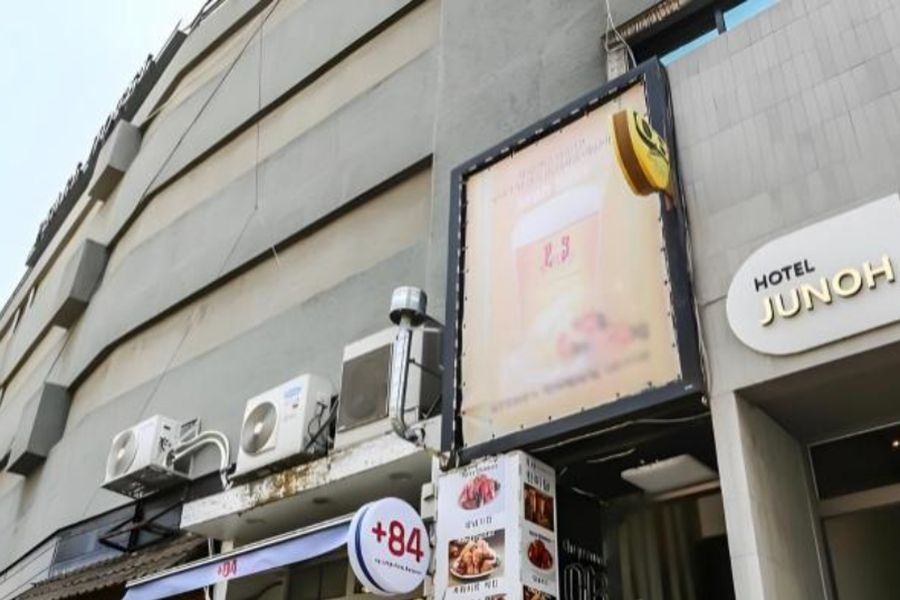
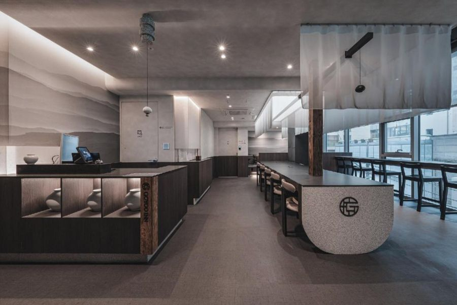
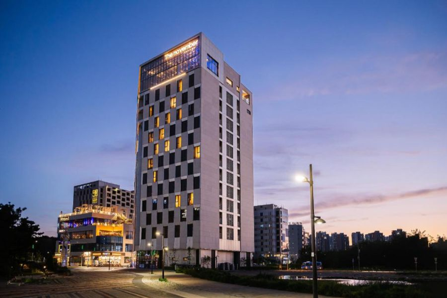

Still to sort
Every night is booked. One train left: Spacia Kinugawa from Shinjuku on 6 Dec.
Klook still shows the three Shinkansen and Tobu tickets as "confirming", so check they turn to confirmed. Agoda payments come out on 25 Nov, 27 Nov, 2 Dec, 4 Dec, 7 Dec, 9 Dec, 14 Dec and 22 Dec.
Entry
Australians don't need a visa for either country on this trip. Two free online forms make arrival quicker. Checked on 11 October 2026, so re-check the week before.
-
Before 1 Dec
Visit Japan Web
Free. Up to 90 days visa-free. Register your passport and flight, fill in the immigration and customs forms, and screenshot the QR codes for Narita. Paper forms on arrival still work if you skip it.
Open Visit Japan Web -
12 to 14 Dec
Korea e-Arrival card
Free. Required for foreign visitors. Submit it online in the three days before landing. Do it in Kyoto, not at Haneda at midnight.
Fill in the e-Arrival card -
Nothing to do
K-ETA
Not needed. Australians are exempt from K-ETA until 31 December 2026, and you leave Seoul on 28 December. Skip any site that tries to sell you one.
Official K-ETA site
The plan, day by day
Travel days and bookings are fixed. Anything marked Book needs a ticket. They are all listed in Book ahead.
Melbourne
- Thu26Nov
Land in Melbourne
- 6:30 am
- Off the overnight from Perth at T4.
- The plan
- Apartment, breakfast, nap. Nothing else.
- Fri27Nov
Melbourne week
- 27 to 30 Nov
- Laneway coffee, Fitzroy and Collingwood, South Melbourne Market, St Kilda at sunset.
- Before you go
- Repack with the winter layers on top.
Tokyo · Shinjuku
- Tue1Dec
Land in Tokyo
- Arrive
- Narita T3. Book Narita Express to Shinjuku, about 80 min.
- 4 pm
- Check in at Book & Bed.
- Night
- Omoide Yokocho yakitori and the Kabukicho lights.
- Wed2Dec
Shinjuku and Shibuya
- Morning
- Shinjuku Gyoen garden (¥500), then the free Metropolitan Government Building view.
- Sunset
- Book Shibuya Sky, sunset slot.
- Night
- Shibuya Crossing and Center Gai.
- Thu3Dec
Asakusa and Ueno
- Early
- Senso-ji and Nakamise before 8 am.
- Afternoon
- Ueno Park and Ameyoko market.
- Night
- Akihabara arcades. teamLab Planets is closed today, so it is on Friday.
- Fri4Dec
Harajuku and teamLab
- Morning
- Meiji Jingu, Takeshita Street, Omotesando.
- Afternoon
- Book teamLab Planets in Toyosu (timed entry).
- Night
- Odaiba and the Rainbow Bridge view.
- Sat5Dec
Markets and lights
- Morning
- Tsukiji Outer Market for breakfast.
- Afternoon
- Ginza and Tokyo Station.
- Night
- Marunouchi Christmas illuminations. Pack for the ryokan.
Kinugawa Onsen and Nikko
- Sun6Dec
To the ryokan
- Morning
- Check out by 11 am.
- Train
- Book Spacia Kinugawa from Shinjuku, about 2 hrs, no changes.
- 3 pm
- Matsuya check-in and the onsen.
- Mon7Dec
Nikko shrines
- Train
- Tobu local to Tobu Nikko, about 35 min. Buy a Nikko bus day pass at the station.
- Day
- Tosho-gu, Shinkyo Bridge and Kanmangafuchi Abyss.
- Night
- Back for a soak. Matsuya is room only, so eat in town.
- Tue8Dec
Samurai day
- Day
- Book Edo Wonderland, an Edo-period theme town with ninja and oiran shows, a short bus from Kinugawa Onsen.
- Or
- Kegon Falls and Lake Chuzenji if the weather is clear.
- Night
- Pack. The train is at 6:41 am.
- Wed9Dec
Ryokan to Kyoto
- 6:41 am
- Kinu 110 to Asakusa (paid).
- 11:00 am
- Nozomi 255 from Tokyo Station (paid), arriving Kyoto 1:15 pm.
- Evening
- Continue Nijojo Kita from 3 pm, then Nishiki Market and Pontocho.
Kyoto and Kanazawa
- Thu10Dec
Inari and Gion in kimono
- Dawn
- Fushimi Inari, before the tour groups.
- Midday
- Book Kimono rental in Gion.
- Afternoon
- Yasaka Shrine, Hanamikoji and Kiyomizu-dera (¥500). Book Tea ceremony in Gion.
- Fri11Dec
Kanazawa day trip
- Train
- Book Thunderbird and Hokuriku Shinkansen via Tsuruga, about 2 hrs each way.
- Day
- Kenroku-en, Omicho Market seafood lunch, Higashi Chaya and gold-leaf ice cream.
- Evening
- Back in Kyoto for dinner.
- Sat12Dec
Arashiyama
- Early
- Bamboo grove and Tenryu-ji.
- Late morning
- Book Sagano Romantic Train along the gorge.
- Afternoon
- Iwatayama monkey park and the Togetsukyo Bridge.
- Sun13Dec
Gold and castles
- Morning
- Kinkaku-ji (¥500), then Ryoan-ji.
- Afternoon
- Nijo Castle, walking distance from the hotel.
- Night
- Kyoto Station Christmas tree. Pack early.
- Mon14Dec
Back to Tokyo, then Haneda
- 7:06 am
- Nozomi 70 to Tokyo (paid), arriving 9:15.
- Day
- Bags at Nine Hours. Shin-Okubo Koreatown and Don Quijote nearby.
- 3 pm to 10 pm
- Check in, shower and sleep, then JR to Shinagawa and Keikyu to Haneda T3.
Seoul · Hongdae & Yeonnam-dong
- Tue15Dec
Land at dawn
- 4:40 am
- Incheon T1. Book WOWPASS or T-money, and some won.
- Morning
- AREX all-stop to Hongik Univ. Bags at iHouse ChinChin, café brunch in Yeonnam-dong.
- Afternoon
- Nap after check-in at 3 pm, then Hongdae street performances.
- Wed16Dec
Markets and K-pop
- Lunch
- Mangwon Market, then Mangwon Han River Park.
- Afternoon
- Book K-pop dance class in Hongdae.
- Night
- Noraebang.
- Thu17Dec
Colour and cafés
- Morning
- Book Personal colour analysis, popular and good for content.
- Afternoon
- Ewha campus, Sinchon shops and photo booths.
- Night
- Yeonnam-dong bars and Gyeongui Line Forest Park.
Seoul · Jongno & Bukchon
- Fri18Dec
Move to Insadong
- Morning
- About 30 min by subway. Bags at Hotel Junoh.
- Afternoon
- Book Changdeokgung and the Secret Garden tour (timed).
- Night
- Gwangjang Market for bindaetteok and mayak gimbap.
- Sat19Dec
Palace in hanbok
- Morning
- Book Hanbok rental, then free entry to Gyeongbokgung. Guard change at 10 am and 2 pm.
- Afternoon
- Bukchon Hanok Village and Samcheong-dong.
- Night
- Ikseon-dong cafés and the Cheonggyecheon lights.
- Sun20Dec
Myeongdong and Namsan
- Day
- Myeongdong K-beauty shopping.
- Sunset
- Book Namsan cable car and N Seoul Tower.
- Night
- Myeongdong street food and the Shinsegae Christmas facade.
Seoul · Gangnam
- Mon21Dec
South of the river
- Morning
- Check out 11 am, about 40 min to Gangnam.
- Afternoon
- Bongeunsa temple, COEX and the Starfield Library.
- 4 pm
- GOYOO check-in.
- Tue22Dec
Seongsu
- Day
- Seongsu pop-ups, concept cafés and Seoul Forest.
- Night
- Ttukseom Han River Park.
- Wed23Dec
DMZ
- All day
- Book DMZ tour: 3rd Tunnel, Dora Observatory, Dorasan Station. Bring your passport.
- Or
- Book Nami Island, Petite France and the Garden of Morning Calm lights.
- Thu24Dec
Christmas Eve
- Day
- Book Lotte World Adventure and its ice rink.
- Night
- Book Seoul Sky at Lotte World Tower, and the Christmas market below.
- Fri25Dec
Christmas Day
- Day
- Spa Lei, a women-only jjimjilbang in Sinsa.
- Night
- Korean BBQ Christmas dinner.
- Sat26Dec
Shopping day
- Day
- Garosu-gil and Apgujeong Rodeo.
- Afternoon
- The Hyundai Seoul in Yeouido for its Christmas village.
- Night
- Yeouido Han River Park.
- Sun27Dec
To the airport island
- 11 am
- Check out of GOYOO. Airport bus or AREX towards Incheon.
- Afternoon
- Ocean Park 9 check-in, sunset at Eulwangni Beach.
- Night
- Early night.
- Mon28Dec
Fly home
- About 5:30 am
- Taxi to Terminal 1.
- 7:35 am
- AirAsia via Kuala Lumpur, Perth at 3:40 am on the 29th.
Where to stay
Every night from Melbourne to the last night at Incheon is booked. Tap a photo to open the place in Maps or on Booking.com.

Apartment in Southbank
A$880for 5 nights
- Dates
- 26 Nov to 1 Dec
- Area
- Southbank, Melbourne
- Via
- Booking.com

Book & Bed Tokyo Shinjuku
~A$392CNY 1,806 for 5 nights
- Dates
- 1 to 6 Dec, in 4 pm, out 11 am
- Room
- Single bunk, breakfast included
- Area
- Kabukicho APM Bldg 8F
- Pay by
- 25 Nov

Hana no Yado Matsuya
~A$289JPY 29,394 for 3 nights, plus a small bathing tax
- Dates
- 6 to 9 Dec, in 3 pm, out 10 am
- Room
- River-view tatami room, room only
- Station
- Kinugawa Onsen
- Pay by
- 27 Nov

Continue Nijojo Kita
~A$230JPY 23,760 for 5 nights
- Dates
- 9 to 14 Dec, in 3 pm, out 10 am
- Room
- Double room, shared bathroom
- Area
- Kamigyo-ku, by Nijo Castle
- Pay by
- 4 Dec

9h nine hours Shinjuku-North
~A$661 capsule night
- Dates
- 14 to 15 Dec, in from 3 pm
- Room
- Female-only capsule
- Area
- Hyakunincho, near Shin-Okubo
- Leave
- About 10 pm for Haneda

iHouse ChinChin
~A$352CNY 1,624 for 3 nights
- Dates
- 15 to 18 Dec, in 3 pm, out 11 am
- Room
- Deluxe Family Suite, 40 m², courtyard view
- Area
- Yeonnam-ro 7-gil, Yeonnam-dong
- Pay by
- 7 Dec, free cancellation before 9 Dec
You arrive around 7 am. Message the property on Agoda to ask about an early bag drop.
Open in Maps
Hotel Junoh
~A$373KRW 351,693 for 3 nights
- Dates
- 18 to 21 Dec, in 3 pm, out 11 am
- Room
- Deluxe Double, queen bed, city view
- Area
- Insadong 16-gil, near Anguk station
- Pay by
- 2 Dec, free cancellation before 4 Dec

GOYOO INN & CABINS
~A$534KRW 503,349 for 6 nights
- Dates
- 21 to 27 Dec, in 4 pm, out 11 am
- Room
- Women-only cabin
- Area
- Teheran-ro 77-gil, Gangnam
- Pay by
- 14 Dec, free cancellation before 16 Dec

Ocean Park 9
~A$51KRW 48,103 for 1 night
- Dates
- 27 to 28 Dec
- Room
- Standard Double, city view, 26 m²
- Area
- Yeongjong Island, by Incheon Airport
- Pay by
- 22 Dec
A short taxi to Terminal 1 for the 7:35 am flight. Ask reception the night before about a shuttle.
Open in Maps
Trains
The long legs in Japan. Klook prices are from the listings you showed me. The rest are estimates. A Suica card covers the metro and local trains.
Narita T3 to Shinjuku
About ¥3,250 · ~A$32
Shinjuku to Kinugawa Onsen
About A$40 · to book
Kinugawa Onsen to Asakusa
A$16.67 · paid
Asakusa to Tokyo Station
¥210 · Suica
Tokyo to Kyoto
A$153.50 · paid
Kyoto to Kanazawa and back
About A$170 return
Kyoto to Tokyo
A$154.93 · paid
Shinjuku to Haneda T3
About ¥500 · Suica
Book ahead
Everything in the plan that needs a ticket, in date order. Prices are rough guides from current listings, so check the price when you book. Book the timed ones first.
Japan
About ¥3,000
About ¥3,000
From ¥3,800
About A$40
About ¥5,000 to ¥6,000
About ¥3,000 to ¥6,000
About ¥3,000 to ¥5,000
About ¥9,000 each way
About ¥900
Korea
About ₩5,000 for the card
About ₩50,000 to ₩70,000
About ₩80,000 to ₩150,000
About ₩8,000
About ₩15,000 to ₩30,000
About ₩40,000 for both
About ₩55,000 to ₩75,000
About ₩60,000 plus ₩29,000 or more
Things to do, eat and shop
Sights, cafés, matcha, restaurants and shops near each base. Tap a photo or name to open it in Google Maps. Prices are rough guides.
Tokyo · Sights
Omoide Yokocho
Lantern-lit alleys of tiny yakitori stalls by Shinjuku Station.
Tsukiji Outer Market
Tamagoyaki, fresh sushi and grilled scallops from the stalls.
Tokyo · Cafés and matcha
Suzukien matcha gelato
About ¥500
Seven strengths of matcha gelato, up to one of the strongest in the world.
Glitch Coffee & Roasters
Light-roast specialty coffee, one of Tokyo's best-known cafés.
Tokyo · Eat
Tokyo · Shop
Shibuya PARCO
Nintendo Tokyo, the Pokémon Center and local designers in one mall.
Harajuku and Takeshita Street
Crêpes, candy floss and street fashion.
Shimokitazawa
Vintage shops, record stores and small cafés.
Ginza Six
Luxury mall with a free rooftop garden.
Don Quijote
Snacks, skincare and souvenirs. Bring your passport for tax-free.
Kinugawa and Nikko
Nikko Kanaya Hotel
Japan's oldest resort hotel. Try the lunch or the café's apple pie.
Kyoto · Sights
Ninenzaka and Sannenzaka
Stone lanes of old shops leading to Kiyomizu-dera.
Kyoto · Matcha and cafés
Kyoto · Eat and shop
Nishiki Market
Kyoto's kitchen: skewers, pickles and matcha sweets.
Teramachi and Shinkyogoku
Covered arcades with souvenirs and purikura photo booths.
Kanazawa day trip
Omicho Market
Seafood bowls. Winter is crab season.
Seoul · Hongdae and Yeonnam-dong
Hongdae streets and AK& Hongdae
Buskers, dance crews and shops around Hongik Univ. station.
Mangwon Market
Cheap street food: hotteok, tteokbokki, fried chicken.
Seoul · Jongno and Bukchon
Changdeokgung and the Secret Garden
About ₩8,000 with the garden
A guided walk through the royal back garden.
Ikseon-dong
Hanok alleys turned into cafés and bars.
Insadong
Tea houses, craft shops and street snacks.
Gwangjang Market
Bindaetteok, mayak gimbap and knife noodles.
Myeongdong
K-beauty shops by day, street food stalls at night.
Café Onion Anguk
About ₩7,000
A bakery in a traditional hanok courtyard. The pandoro is the one to get.
Ssamziegil
A spiral mall of small Korean design shops.
Olive Young Myeongdong
The big K-beauty store. Bring your passport for tax refunds.
Seoul · Gangnam, Seongsu and day trips
Lotte World and Seoul Sky
About ₩60,000 plus ₩29,000
Indoor theme park, ice rink and the tower observatory.
Seongsu-dong
Pop-up stores and concept cafés in old factories.
Point of View
A stationery and objects shop. Good for small gifts.
Haus Nowhere Dosan
Gentle Monster, Tamburins and Nudake art-store building.
Spa Lei
A women-only jjimjilbang for a Christmas Day soak.
Nami Island
Tree-lined island walks, about an hour away.
Budget
What's booked so far, in Australian dollars. Rates used: CNY 1 = A$0.217, JPY 1 = A$0.0097, USD 1 = A$1.54, KRW 1 = A$0.00106.
- FlightsA$1,755
- Stays~A$3,167
- TrainsA$325
- Booked so far~A$5,353
| Item | Local price | A$ |
|---|---|---|
| Melbourne to TokyoJetstar via Cairns, plus 16,645 Qantas points | — | 794.27 |
| Haneda to IncheonMM-809 | — | 204.78 |
| Incheon to PerthAirAsia via Kuala Lumpur | — | 755.83 |
| Apartment in Southbank5 nights, paid | — | 880.00 |
| Book & Bed Tokyo Shinjuku5 nights | CNY 1,806 | ~392 |
| Hana no Yado Matsuya3 nights | JPY 29,394 | ~289 |
| Continue Nijojo Kita5 nights | JPY 23,760 | ~230 |
| 9h nine hours Shinjuku-North1 night | USD ~44 | ~66 |
| iHouse ChinChin3 nights | CNY 1,624 | ~352 |
| Hotel Junoh3 nights | KRW 351,693 | ~373 |
| GOYOO INN & CABINS6 nights | KRW 503,349 | ~534 |
| Ocean Park 91 night | KRW 48,103 | ~51 |
| Klook trainsKinu 110, Nozomi 255, Nozomi 70 | — | 325.10 |
| Klook eSIMsAsia 28 days + Indonesia 5 days | — | ~106 |
| Total | ~5,353 |
Not in this total: Perth to Melbourne (paid), the Spacia Kinugawa train on 6 Dec and the Kanazawa day-trip tickets. Agoda charges in local currency on the payment date, so the A$ amounts can move a little.
Getting around
The eSIM covers Japan and Korea, so maps work from the moment you land.
Suica
Add it to Apple Wallet before you fly and top up with your card. It works on every metro and local train in this plan.
Haneda at midnight
Trains stop around midnight, so take one that gets you in by about 11 pm. Terminal 3 stays open overnight.
Naver Map and T-money
Google Maps can't do walking directions in Korea, so use Naver. Buy a T-money card at an Incheon convenience store for the subway and buses.
Incheon, both ways
You land before the first AREX train, so wait in arrivals, then take the all-stop AREX straight to Hongik Univ. For the 7:35 am flight home, an airport hotel on the 27th means a short shuttle instead of a 4:30 am start.
Sending the suitcase ahead
Yamato can send your case from Book & Bed to the Kyoto hotel, so you only take a small bag to the ryokan. Ask at reception the day before.